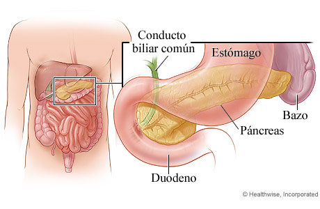
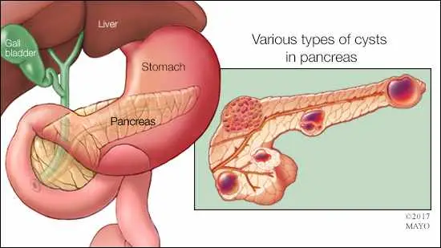
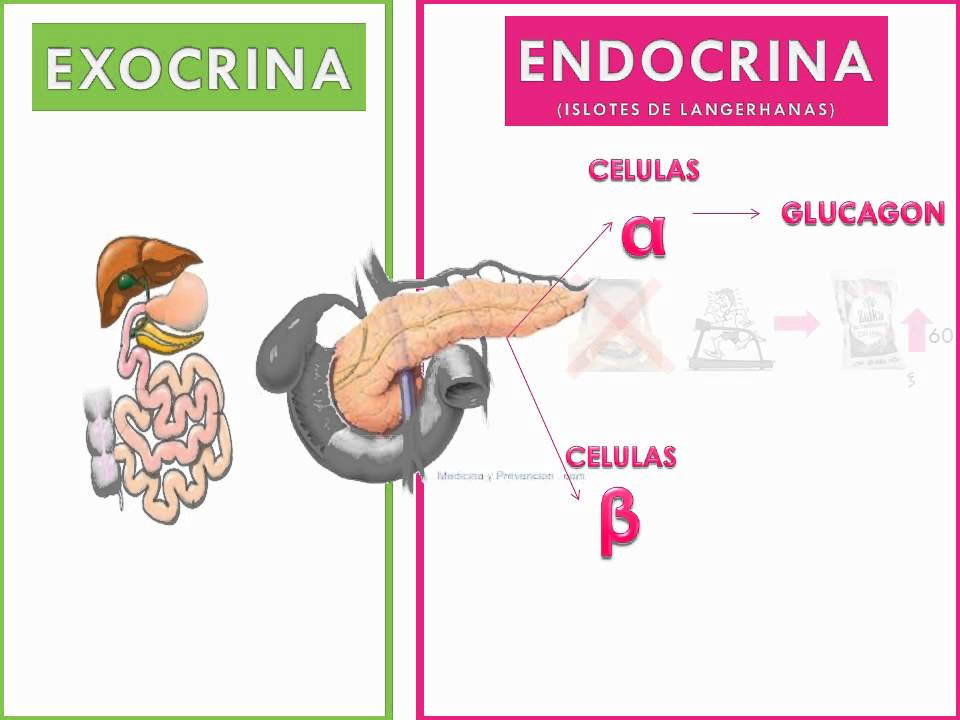
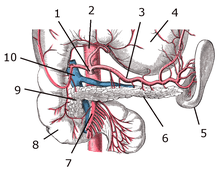
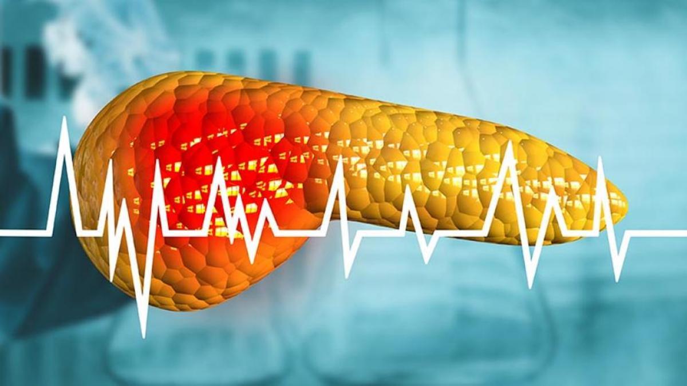

Caracteríticas del páncreas |
| Ubicación: El páncreas se encuentra en el abdomen, en la parte posterior del estómago, en la curvatura superior del duodeno y detrás del peritoneo.
|  |
|  |
Tamaño y forma: Tiene una forma alargada y cónica, con una longitud aproximada de 15 centímetros y un grosor de alrededor de 2-3 centímetros. Varía en tamaño dependiendo de la edad y el estado de hidratación de una persona.
|
| Estructura: El páncreas está compuesto principalmente por tejido glandular. Está dividido en tres regiones: cabeza, cuerpo y cola. La cabeza se encuentra en el lado derecho y se conecta al duodeno, mientras que la cola se extiende hacia la izquierda y se acerca al bazo.
|  |
|  |
Función exocrina: El páncreas también tiene una función exocrina, lo que significa que produce y secreta enzimas digestivas. Estas enzimas, como la amilasa, la tripsina y la lipasa, ayudan a descomponer los carbohidratos, proteínas y grasas en los alimentos para facilitar su digestión y absorción en el intestino delgado.
|
| Irrigación sanguínea: El páncreas recibe irrigación sanguínea a través de la arteria pancreática, que se ramifica desde la arteria esplénica y la arteria mesentérica superior.
|  |
|  |
Patologías: El páncreas puede verse afectado por diversas enfermedades, como la diabetes, la pancreatitis (inflamación del páncreas), los tumores pancreáticos y el cáncer de páncreas.
|
| Función endocrina: El páncreas contiene grupos de células especializadas llamadas islotes de Langerhans, que se encargan de la producción y secreción de hormonas. Las células beta de los islotes producen insulina, que regula los niveles de azúcar en la sangre, mientras que las células alfa producen glucagón, que aumenta los niveles de azúcar en la sangre.
| |